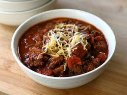

German Texas Chili

Fred is German and I am Texan! This creation is a blend of the two! Have a different ethnic background? You can easily add spices and other ingredients to make it your own, although, we have to say - it's quite good the way it is.
This can easily be prepared the day before or put into the freezer for later use. Serve over baked potato or corn chips with 'fixins' such as sour cream, grated cheese, onions, etc. For a richer flavor, you are able to make this dish the night before and keep in refrigerator until the next day. Enjoy!
Ingredients
- ¼ cup olive oil
- 4 red onions, chopped
- 6 chipotle peppers in adobo sauce, chopped, or to taste
- 1 pound hot pork sausage (such as Jimmy Dean®)
- 2 ½ pounds ground turkey
- 2 (28 ounce) cans crushed tomatoes with juice (such as Hunt's®)
- 1 tablespoon garlic powder
- 1 ½ teaspoons kosher salt
- 1 tablespoon ground black pepper
- 3 tablespoons ground cumin
- 1 tablespoon chili powder
- ¼ cup paprika
- ¼ cup brown sugar
- 4 cinnamon sticks
- 12 whole cloves
Directions
- Heat the olive oil in a very large skillet over medium heat, and cook the onions and chipotle peppers until the onions are translucent, about 10 minutes. Place the hot sausage and turkey into the skillet and cook until brown, chopping the meat up with a spoon into crumbles as it cooks, 10 to 15 more minutes. Spoon the meat mixture into a large slow cooker, leaving excess grease behind in the skillet. Stir the crushed tomatoes, Italian-style diced tomatoes, beer, garlic powder, kosher salt, black pepper, cumin, chili powder, paprika, and brown sugar into the meat mixture until thoroughly combined.
- Tie the cinnamon sticks and cloves into a piece of cheesecloth, and drop the bundle into the slow cooker. Set the cooker to Low, and cook 6 to 8 hours. Remove the cheesecloth spice bundle before serving.
Want to try out some other intercontinetal dishes ? We've got the right recipe for you...